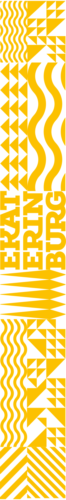
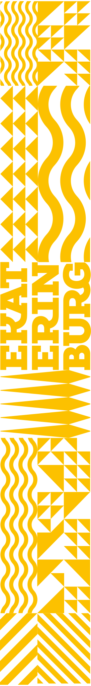

Оформление общественного транспорта
В Екатеринбурге активно развивается общественный транспорт. Город постепенно закупает новые комфортные составы автобусов, троллейбусов и трамваев. Но к сожалению, все составы оформлены по-своему, без системы, вне стилистики города. Из-за этого у горожан складывается не самое лучшее отношение к общественному транспорту.
Чтобы решить эту проблему, ы разработали единую систему оформления транспорта, которая будет идентифицировать Транспорт Екатеринбурга от других городов исоздавать дружелюбную атмосферу.
Цвета
Последние много лет в Екатеринбурге использовалась своя уникальная расцветка транспорта: автобусы — зелёные, трамваи — красно-жёлтые, троллейбусы — голубые. Мы решили сохранить исторические и привычные всем решения лишь с одной доработкой — трамваи стали оранжевыми, так как жёлтые цвет уже закреплен за такси, а красный — за вокзалом.
Это цветовое кодирование пронизано через всю графическую систему: одни и те же цвета используются как на самих составах, так и на иконках, остановках, навигации и т. д.
Паттерн
Чтобы сделать наш транспорт узнаваемым вовсём мире, мы окутали его в фирменный паттерн айдентики города. Благодаря ей ранспорт ещё сильнее вписывается в гоодское пространство и обретает собственный характер.


 
Слоганы
Уникальная особенность нового транспорта Екатеринбурга — это диалог с пассажирами. На ботах мы разместили слоганы, которые дружелюбно зовут людей пользоваться общественным транспортом. Если раньше транспорт совсем никак не общался или общался тоном вахтёрши, то теперь он говорит на понтном и добром языке. Наконец-то в трансорте появилась душа и любовь к пассажрам.


Внутренние наклейки
Мы разработали внутренние наклейки в единой системе с экстерьером и всем дизайн-кодом города. Приятные и весёлыеиконки радуют глаз, а подписи теперь имеют перевод на английский язык для туристов.


Логотип
Чтобы подкрепить проделанную работу, мы создали логотип для нового единого общественного транспорта, в котором объединились дороги, перекрёстки и первые буквы Транспорта Екатеринбурга.